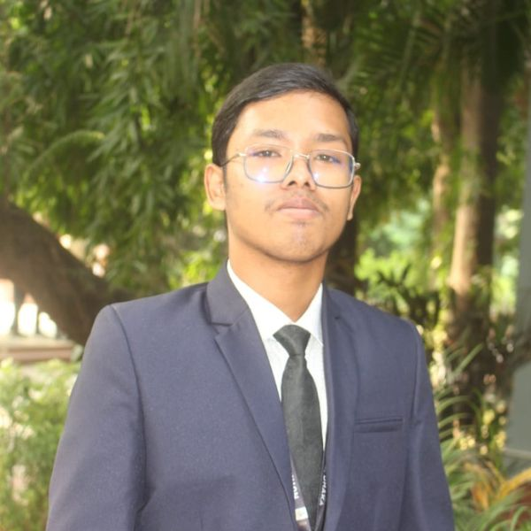

Mahmud Hasan Simanto
Economics Undergraduate | Youth MP | Philanthropist
About Me
I am completing a Bachelor of Social Sciences (B.S.S.) in Economics at the University of Dhaka.
Education
-
B.S.S. in Economics — University of Dhaka
-
HSC — Notre Dame College, Dhaka
-
SSC — Pravakar Vidyaniketan, Tamai
Leadership & Activities
-
General Secretary (Information & Technology) | Notre Dame Humanitarian ClubApril 2024 – April 2025
- Organized Iftar distribution program for over 70 rickshaw pullers and distributed around Notre Dame College area
- Fundraised for underprivileged people of the hills in winter season (BDT 20,000)
- Co-ordinated some inter-college quiz competitions (e.g., HEROES OF NDC)
-
Community Service Director | Rotaract Club of Notre Dame CollegeApril 2024 – April 2025
- Cleaned a park in Uttara
- Raised fund for flood-affected people (BDT 7,000)
- Assisted in "Earth Summit" by volunteer management
- Provided educational kits to orphan children (i.e., Book, Pen, Pencil, Eraser, Sharpener, File, Scale, and so on)
-
Office Secretary | Notre Dame Natya DalApril 2024 – April 2025
- Organized some workshops by prominent film actors and directors
- Co-ordinated at "10th National Natya Utshab", supervising volunteers and welcoming program's distinguished guests
-
Associate Member | United Nations Youth and Students Association of Bangladesh2025
-
Member of Parliament | Bangladesh Youth Mock Parliament | Constituency: Sirajganj-3
Skills
Experience
-
Content Developer (Part-Time) — UDVASH Academic and Admission CareApril 2025 – Present
- Develop educational content, chiefly general-knowledge books for public university admission candidates
-
Director — Hasan Acquarium Fish and Hatchery2021 – 2023
- Handled almost all operations: buying and selling fish, negotiating with retailers and wholesalers, storing feed, changing water, checking water parameters and so on
-
Volunteer — Khwaja Mozammel Hoque (RA.) FoundationFebruary 12, 2017 – Present
Interests
Accomplishments
- Department Scholarship2026
- Perfect Attendance Certificate of Notre Dame College, Dhaka2025
- Champions — Mystery Solve Segment at Youth Verse 2025: Leadership Beyond Boundaries2025
- Talentpool Scholarship (SSC)2023
-
Upazila Best Student Award (SSC), with a Special Stipend2023
- Awarded for being the one and only student in the Arts department at my school for two years (2021 – 2023)
- Ranked 42nd in Rajshahi Board in SSC2023
- Lifetime Membership at Dipto Chetona Bikash Kendro (DCBK)
Press Release
-
Interview of Mine at KMRF 2026 — KMRFNovember 2, 2026
Contact
- Email: Mail Me